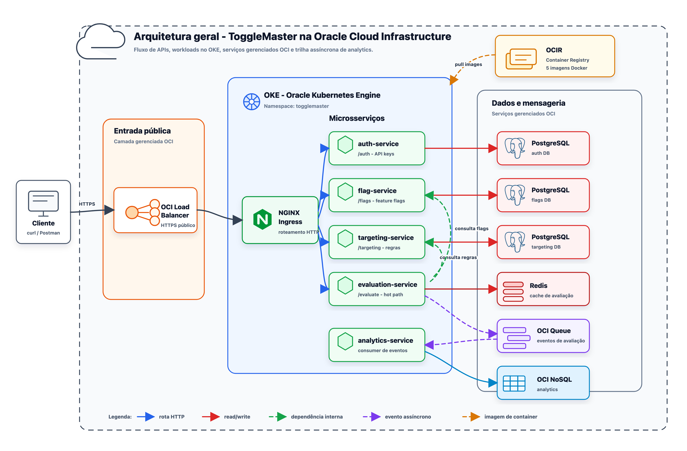

POSTECH Tech Challenge - Fase 2
Relatório de Entrega
Grupo 76 - Projeto ToggleMaster
Identificação
| Grupo | 76 |
|---|---|
| Participante | Julio Cesar Diniz Nogueira |
| Matrícula | RM373719 |
| Discord | Júlio César - RM373719 |
Links da Entrega
| Repositório | https://github.com/JulioDinizN/tech-challenge-fase-2 |
|---|---|
| Vídeo de demonstração | Google Drive - Vídeo de demonstração do Grupo 76 |
Arquitetura
Arquitetura implementada para a opção Oracle Cloud Infrastructure, incluindo entrada pública temporária por HTTP, OKE, cinco microsserviços, persistência, mensageria, segredos e autoscaling.

docs/diagrams/overall-architecture.png.
Resumo da Solução
| Ambiente local | Cinco aplicações, dois PostgreSQL, Redis e DynamoDB Local: nove contêineres. |
|---|---|
| Cluster e imagens | Oracle Kubernetes Engine (OKE) e cinco repositórios privados no OCIR. |
| Dados | Três OCI Database with PostgreSQL independentes, OCI Cache, OCI Queue e OCI NoSQL. |
| Entrada | OCI Load Balancer e F5 NGINX Ingress Controller OSS para /validate, /flags, /rules e /evaluate. |
| Escalabilidade | Metrics Server e HPAs de CPU para evaluation e analytics, de 1 a 5 réplicas. |
| Segurança | OCI Vault, Secrets Store CSI, Secrets Kubernetes, usuários de banco restritos e OKE Workload Identity. |
Fluxos Principais
Avaliação
- O cliente chama
/evaluatepelo Load Balancer e NGINX Ingress. - O evaluation-service consulta Redis e, quando necessário, flag-service e targeting-service.
- A decisão retorna ao cliente e o evento é publicado de forma assíncrona na OCI Queue.
Analytics
- O analytics-service faz long polling na OCI Queue.
- O evento é validado e persistido na tabela
ToggleMasterAnalytics. - A mensagem só é confirmada depois da escrita. O ID da mensagem é usado como chave para permitir reentrega idempotente.
Segredos e Bancos
O Terraform cria um Vault DEFAULT, uma chave AES-256 de software e oito segredos cujo conteúdo é gerado no próprio OCI. Terraform exporta apenas nomes, OCIDs e endpoints, nunca senhas.
O provider CSI usa Workload Identity para sincronizar senhas e chaves em Secrets nativos do Kubernetes. Três Jobs idempotentes criam cada banco, o usuário restrito da aplicação e o schema. Os pods não recebem a senha administrativa.
Localmente, DATABASE_URL continua com prioridade. No OKE, host, banco e usuário vêm de ConfigMap, enquanto somente DB_PASSWORD vem do Secret. Dessa forma, a adaptação OCI não impede o uso do Docker Compose.
Atendimento aos Requisitos
| Docker Compose com 9 contêineres | Implementado e validado |
|---|---|
| Dockerfiles dos 5 serviços | Implementado |
| Terraform OCI reproduzível | Provisionado com state remoto privado |
| Namespace, Deployments e Services | 5 microsserviços prontos no OKE |
| ConfigMaps, Secrets, probes e limites | Implantado e validado |
| Ingress NGINX e Load Balancer | Smoke externo aprovado |
| HPA de evaluation e analytics | Escala de 1 para 4 réplicas observada |
| Queue para NoSQL | Eventos persistidos no OCI NoSQL |
Adaptações dos Microsserviços
- Correções de build, dependências e Dockerfiles para executar os cinco serviços em contêineres.
- Chave interna inicial criada de forma idempotente no auth-service para integrar evaluation, flag e targeting.
- Producer OCI Queue no evaluation-service e consumer OCI Queue/NoSQL no analytics-service, ambos com Workload Identity.
- Configuração PostgreSQL por
DB_*para receber senha do Vault sem remover a compatibilidade comDATABASE_URL. - Fallbacks locais: avaliação apenas registra analytics no log e o worker de analytics permanece desligado.
Detalhes, causas, decisões e verificações estão em docs/fixes.md.
Desafios e Decisões
- Mapear SQS/DynamoDB para APIs nativas OCI sem alterar o contrato do evento.
- Evitar senha em Terraform e manifests usando geração no Vault e sincronização CSI.
- Inicializar bancos gerenciados com usuários restritos e Jobs idempotentes.
- Diagnosticar o registro dos workers OKE até validar uma imagem Oracle Linux 8 compatível com o cluster.
- Adequar imagens e manifests ao runtime CRI-O com UID numérico não root e referências de imagem totalmente qualificadas.
- Manter a topologia local exigida mesmo com integrações OCI desabilitadas no Compose.
- Planejar teardown na ordem correta, pois o Load Balancer criado pelo controller Kubernetes não pertence ao state Terraform.
Validação e Evidências
Na validação local foram executados testes unitários, build das cinco imagens, nove contêineres saudáveis e smoke completo com result: true. A configuração Terraform e os manifests Kubernetes também passaram por validação e renderização antes do deploy.
Na OCI foram observados um worker OKE pronto, cinco Deployments disponíveis, três Jobs de banco concluídos, Secrets sincronizados pelo CSI, Ingress acessível pelo Load Balancer e smoke externo aprovado. Sob carga, os HPAs de evaluation e analytics escalaram de uma para quatro réplicas, enquanto eventos produzidos pela avaliação foram consumidos da OCI Queue e persistidos na tabela OCI NoSQL.
Os scripts versionados automatizam validação, build/push, deploy, smoke, carga, geração do PDF e destruição ordenada após a entrega.
Este relatório contém os itens solicitados na seção "Relatório de Entrega (.PDF ou .txt)" do Tech Challenge Fase 2 e inclui também arquitetura, decisões e rastreabilidade da implementação.